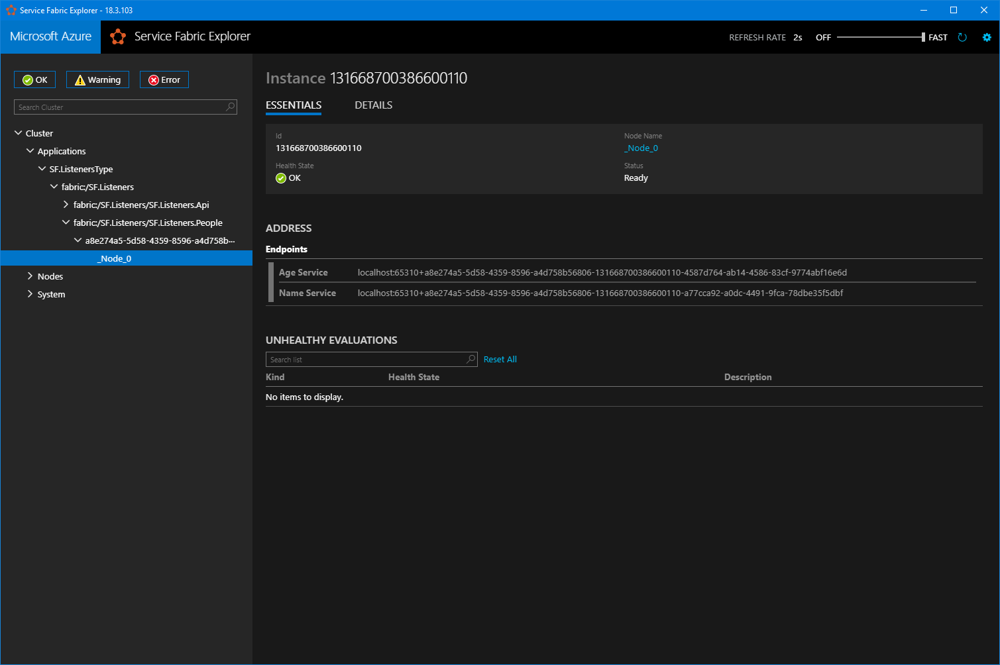

Multiple listeners for your Service Fabric service
Service Fabric is a great piece of technology on the Azure platform and I've been using it quite a lot in recent projects. It takes away a lot of the setup and orchestration when dealing with microservices.
There comes a point where services need to talk to each other and this is easily achieved using the Remoting bits you can get from NuGet. The general way of doing this is creating an Interfaces project next to the service that
contains the service interface and classes used in transport. The interface is implemented on the service entrypoint and a listener is exposed to the Fabric runtime so that it can communicate with the rest of the platform. We're
going to take it one step further and put the service implementations in their own class instead of on the service entrypoint (keeps things nice and clean) and also enable dependency injection from that point forward.
This new way lets us define as many service endpoints as we want without cluttering the service entrypoint, each with their own listener. Let's dive in!
Before we can start creating endpoints, we need to set up an interface that forces any new service to expose a listener.
public interface IServiceEndpoint
{
ServiceInstanceListener Init
We're working inside a Stateless service so that's what we'll enforce on the generic part of the interface. Implementors of this interface now must be able to give us back a listener that exposes the methods it will offer.
Inside the .Interfaces project for the service contracts, we setup the actual service interface:
public interface IAgeService : IService
{
Task
This interface defines the methods we want to expose.
Now that we have this all set up, we can go ahead and create the service implementation inside the stateless service:
public class AgeService : IServiceEndpoint, IAgeService { private readonly Random _randomAgeMaker;
public AgeService() { ... }
public Task
public ServiceInstanceListener Init
We apply two things here. First we implement the endpoint interface that forces us to make a listener for this service, the second is the interface that defines the services methods. Listeners require a unique name, so when
we create the new FabricTransportServiceRemotingListener we give it a FabricTransportRemotingListenerSettings instance containing a name we can easily recognize in the form of the service name.
This service is now ready to be made accessible to other services in our Fabric Application but we have a few more things to take care of. To keep it all nice and clean we want to use dependency injection for the composition of our services. In this demo I'm using SimpleInjector but any other framework should also work.
The dependencies need to be registered in the root of the application, which in our case is Program.cs. At the very top of the Main(...) method, a container is created that will manage our dependecy graph for us:
var assemblies = AppDomain.CurrentDomain.GetAssemblies(); var container = new Container();
container.RegisterCollection(typeof(IServiceEndpoint), assemblies); container.Register(typeof(IDiagnosticsTracer), typeof(DiagnosticsTracer));
container.Verify();
I've included a very basic logging facility to demonstrate the injection in practice, you can replace it with any dependencies you might have for your services.
The container is passed into the service itself through its constructor, where we'll ask for all the IServiceEndpoints it knows about. When the platform starts asking for listeners we point it to our list of services and call their Init(...) methods to grab the listeners.
internal sealed class People : StatelessService
{
private readonly IEnumerable
public People(StatelessServiceContext context, Container container)
: base(context)
{
_services = container.GetAllInstances
protected override IEnumerable
Now that the container is in charge of dependecies at the very root of our application, we can start injecting things into services like we would in any constructor injection scenario.
You can check out the other service in the demo project for a little preview where I use the IDiagnosticsTracer inside the NameService to report any activity.

The service is now complete but we don't have a way to access it yet from the Api project. We can remote into the service using a Proxy that is created based on the service interface in the Interfaces project.
It's almost the same as setting up a normal project with one notable exception, we have to pass in the name of the listener we want to talk to:
_namesProxy = ServiceProxy.Create
The proxy is then used like every other proxy you've ever created for remoting on Service Fabric:
[HttpGet]
[Route("all")]
public async Task
Running a GET request against the HTTP endpoint above will remote into our NameService in the Stateless People service and retrieve all the names.
The demo code be executed on your local cluster and is accessible through and HTTP API in the .Api project using something like Postman or curl (or any other HTTP client).
You can find the source for this demo on Github.